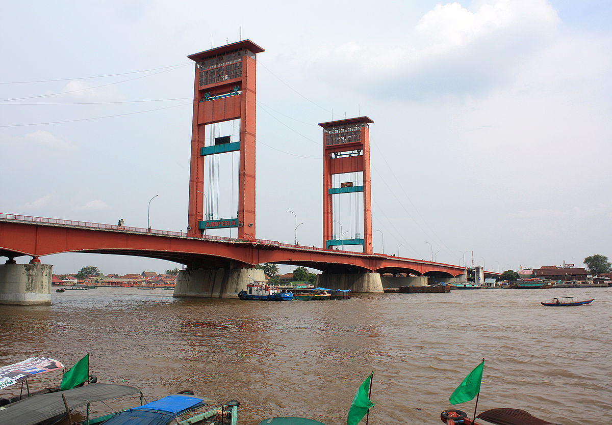
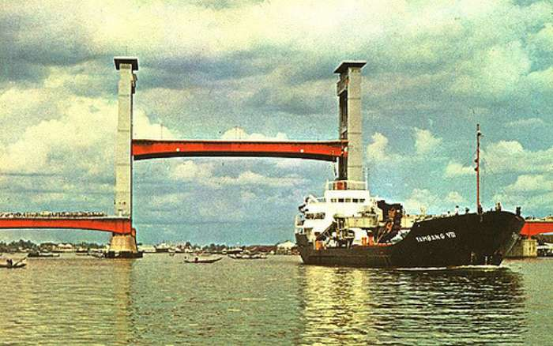

Jembatan Ampera (Amanat penderitaan rakyat) adalah sebuah jembatan di Kota
Palembang, Provinsi Sumatra Selatan, Indonesia. Jembatan Ampera, yang telah menjadi semacam lambang
kota, terletak di tengah-tengah kota Palembang, menghubungkan daerah Seberang Ulu dan Seberang Ilir
yang dipisahkan oleh Sungai Musi.
Palembang identik dengan Jembatan Ampera sebagai ikon kota yang terkenal dengan kuliner empek-empek
nya ini. Masyarakat Kota Palembang sepakat, jembatan yang menghubungkan wilayah seberang ilir dan
seberang hulu ini merupakan simbol kota yang menjadi kebanggaan masyarakat Palembang. Tidak
mengherankan jika berbagai panggung hiburan yang digelar di Kota Palembang kerap diadakan di
seputaran Jembatan Ampera.
Sejarah
Ide membangun jembatan untuk menyatukan dua daratan di Kota Palembang ini sebetulnya sudah ada sejak
zaman Gemeente Palembang, tahun 1906. Saat jabatan Wali Kota Palembang diduduki oleh Le Cocq de
Ville, tahun 1924 muncul kembali gagasan untuk membangun jembatan tersebut. Namun, sampai jabatan Le
Cocq de Ville berakhir bahkan saat Belanda pergi dari Indonesia, proyek pembangunan itu tetap tidak
pernah terealisasi. Kemudian, pada masa kemerdekaan, gagasan itu kembali muncul, DPRD Peralihan Kota
Besar Palembang kembali mengusulkan lagi pembangunan jembatan saat sidang pleno yang berlangsung pada
29 Oktober 1956.
Pembangunan jembatan ini terbilang cukup nekat. Sebab, pada saat itu anggaran yang dimiliki Kota
Palembang yang akan digunakan sebagai modal awal membangun jembatan sekitar Rp 30.000. Kemudian tahun
1957, dibentuk panitia pembangunan, yang terdiri dari Penguasa Perang Komando Daerah Militer
IV/Sriwijaya, Harun Sohar, dan Gubernur Sumatera Selatan, H.A. Bastari dan pendampingnya Wali Kota
Palembang, M. Ali Amin, beserta Wakil Wali Kota, Indra Caya.
Tim ini kemudian melakukan pendekatan kepada Presiden Soekarno untuk mendukung pembangunan jembatan
tersebut. Setelah bertemu, gagasan tersebut di setujui oleh Bung Karno, dengan syarat dibuat juga
taman terbuka di kedua ujung jembatan itu. Dilakukanlah penunjukan perusahaan pelaksana pembangunan,
dengan penandatanganan kontrak pada 14 Desember 1961,
dengan biaya sebesar USD 4.500.000 (kurs saat itu, USD 1 = Rp 200,00) setara Rp.900.000.000.
Kemudian pada April 1962, pembangunan pembuatan jembatan pun di mulai. Biaya pembangunannya diambil
dari dana pampasan perang Jepang.
Tak hanya itu, jembatan ini pun menggunakan tenaga ahli dari negara Jepang. Proses pembangunan
jembatan ini memakan waktu tiga tahun, dan tepat
pada 30 September 1965 jembatan ini diresmikan
oleh Jenderal Ahmad Yani dengan nama Jembatan Bung Karno. Pemberian nama tersebut sebagai bentuk
penghargaan kepada Bung Karno karena dengan sunguh-sungguh memperjuangkan warga Palembang untuk
memiliki sebuah jembatan di atas Sungai Musi. Namun pada tahun 1966 terjadi pergolakan gerakan
Anti-Soekarno, nama jembatan yang mengambil dari Nama Presiden RI pun diubah menjadi Jembatan Ampera
yang artinya Amanat Penderitaan Rakyat.
Struktur
Panjang Jembatan 1.177 m, lebar 22 m (bagian tengah 71,90 m, berat 944 ton dan dilengkapi pembandul
seberat 500 ton), semua bagian tengah bisa diangkat agar kapal-kapal besar bisa lewat namun sejak
tahun 1970 bagian tengah sudah tidak dapat diangkat lagi. Bandul pemberatnya pada tahun 1990
dibongkar karena dikhawatirkan dapat membahayakan. Tinggi jembatan ini 11,5 m dari atas permukaan
air, tinggi menara 63 m dari permukaan tanah dan jarak antara menara 75 m.

Sumber gambar: id.wikipedia.org
Keistimewaan
Pada awalnya, bagian tengah dan bagian belakang dan bagian depan badan jembatan ini bisa diangkat ke
atas agar tiang kapal yang lewat dibawahnya tidak tersangkut badan jembatan. Bagian tengah jembatan
dapat diangkat dengan peralatan mekanis, dua bandul pemberat masing-masing sekitar 500 ton di dua
menaranya. Kecepatan pengangkatannya sekitar 10 meter per menit dengan total waktu yang diperlukan
untuk mengangkat penuh jembatan selama 30 menit.

Sumber gambar: Flickr
Pada saat bagian tengah jembatan diangkat, kapal dengan ukuran lebar 60 meter dan dengan tinggi
maksimum 44,50 meter, bisa lewat mengarungi Sungai Musi. Bila bagian tengah jembatan ini tidak
diangkat, tinggi kapal maksimum yang bisa lewat di bawah Jembatan Ampera hanya sembilan meter dari
permukaan air sungai.
Sejak tahun 1970, aktivitas turun naik bagian tengah jembatan ini sudah tidak dilakukan
lagi.
Alasannya, waktu yang digunakan untuk mengangkat jembatan ini dianggap mengganggu arus lalu lintas di
atasnya. Pada tahun 1990, kedua bandul pemberat di menara jembatan ini diturunkan untuk menghindari
jatuhnya kedua beban pemberat ini.